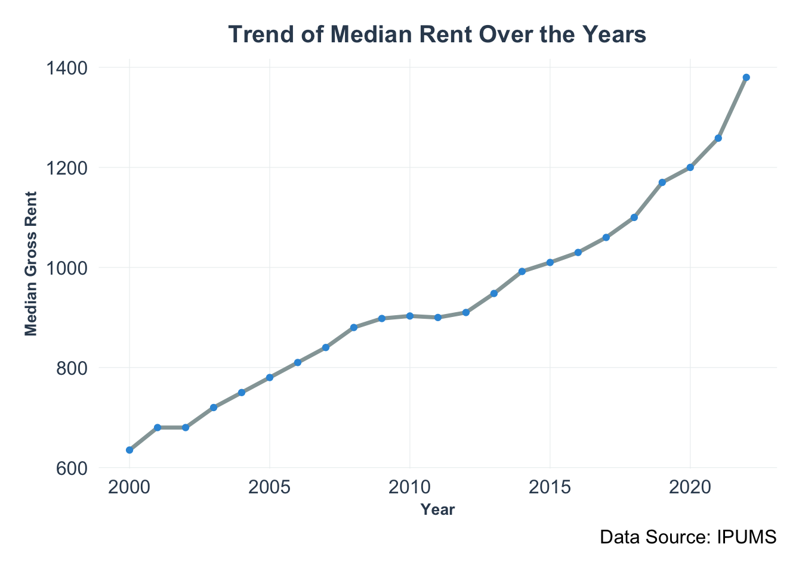
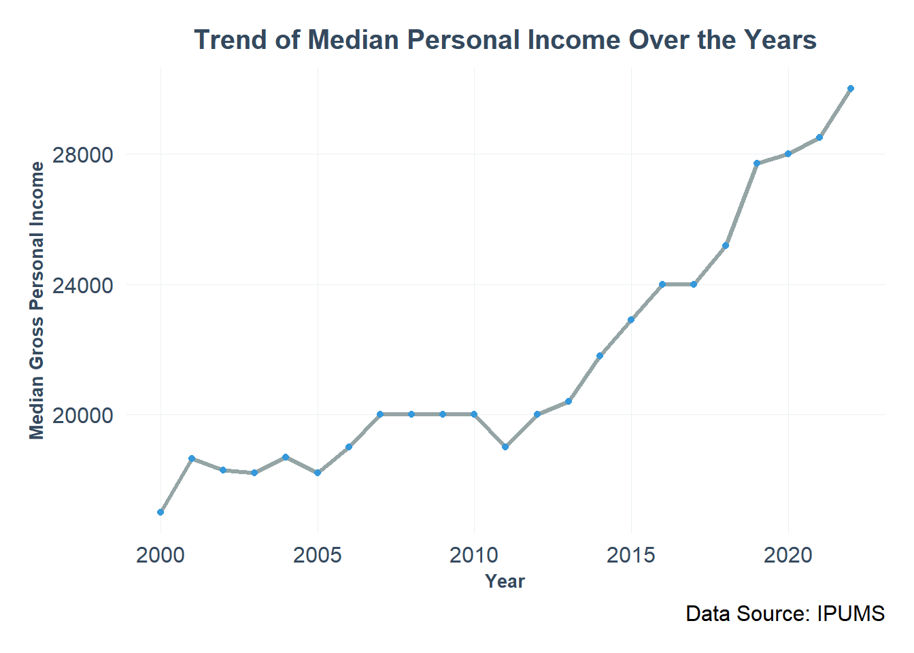
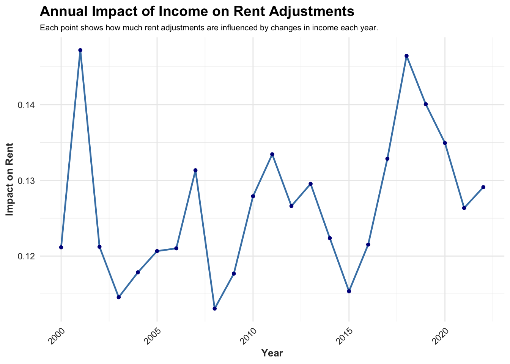
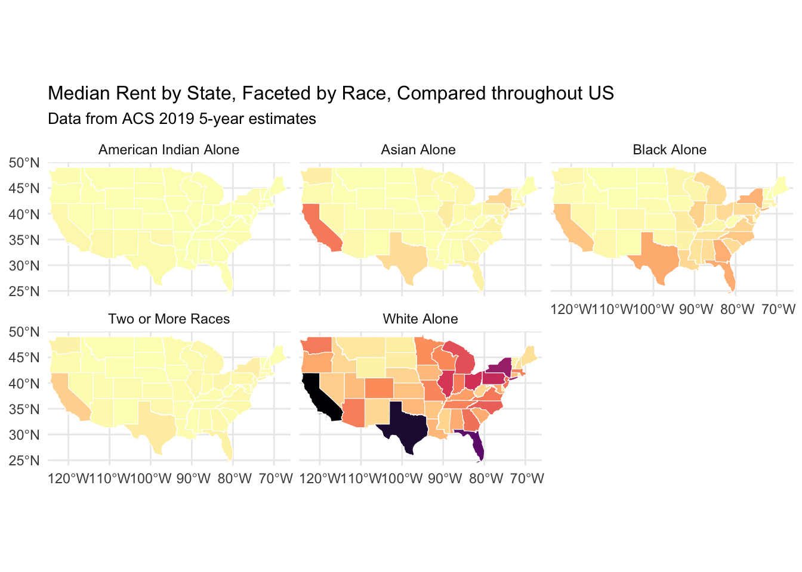

Landlords Envy Him – The Budget Whisperer!
Exploring the Tug-of-War Between Income and Rent in America
Introduction
Picture this: you’ve just landed a well-deserved promotion or perhaps switched to a better-paying job. As your bank account grows, so does your desire to upgrade your living situation. It’s not just about paying more rent; it’s about choosing to invest in a better lifestyle. Across the country, many are making similar choices, opting for apartments with better views, more amenities, or in more desirable neighborhoods as their financial situations improve. This narrative isn’t simply about the burden of higher costs; it’s about the choices we make to enhance our lives with our new-found financial freedom. Join us as we explore a classic example of economic elasticity: What happens to your rent when your income doubles? We discovered that a 100% increase in income leads to a near 15% rise in rent!
Rising Fortunes: Charting the Course of Our Growing Prosperity
Each year brings new opportunities, and with them, our incomes have steadily climbed. The graph you’ll see next tells a clear story: our median income has risen across the board, reflecting a collective upward trend. This increase showcases our economic resilience and the tangible results of years of effort and progress. As you look at the ascending lines, see them as markers of our growing prosperity and the expanding possibilities that come with it.
Trend of Median Personal Income Over the Years
The Dance Begins: Choosing Better Homes
Following our financial advancements, our choices in housing also evolve to reflect our improved circumstances. This section isn’t simply about tracking rent increases; it’s about understanding why as our financial freedom grows, so does our ambition for higher-quality living. The data from IPUMS ACS beautifully illustrates this progression. It maps out our collective journey towards more desirable, well-appointed homes that align with our aspirations and achievements.
Trend of Median Rent Over the Years

Interactive Exploration
The diagram below illustrates the median rent across various U.S. states. While this national overview offers a broad perspective, the true insights are found at a more localized level. Curious about how your city compares? Explore our interactive dashboard to delve into detailed data for each city’s median rent. Simply select a state, click on the city of interest, or interact with the map by zooming in and out to discover areas you’re curious about.

Click the link here to find the city median rent of 2021 you live!
Bridging the Graphs: Analysis and Insights
While our graphs have illustrated upward trends in both rent and income, let’s delve deeper into the implications of these changes. Our analysis transcends mere observation by exploring the concept of elasticity, which measures how responsive rent is to changes in income. Understanding this relationship helps us gauge how financial shifts impact each other and what these dynamics might mean for you.
Wrapping Up: What This Means for Us
As we dive deeper into the dynamics of income and rent, we uncover some intriguing patterns. Here’s what our journey through the data has revealed, told as a story that unfolds over time and across different communities.
The Elastic Dance Between Income and Rent
Imagine getting a raise at work—let’s say your income goes up by 10%. Sounds great, right? But here’s the catch: as your wallet grows thicker, so does your rent bill. In fact, our data from 2022 shows that a 10% increase in income would typically lead to about a 1.334% increase in rent. It’s like a dance where one partner follows closely behind the other, never quite catching up but always in step.
A Historical Perspective
Are you curious about whether people’s preferences for a higher standard of living change over time? This graph offers a captivating look into how our desires and economic realities intersect. Each dot on the plot represents a positive value for every year, signifying a consistent trend: as incomes rise, so does our inclination to seek better living conditions.
However, the journey isn’t straightforward, as you can observe from the plot: although every dots are positive, their values varies. This indicates while the desire for better housing seems perpetual as income increases, the extent to which we are willing or able to invest in higher living standards ebbs and flows. Economic conditions, societal shifts, and personal circumstances all play their roles.
For instance, during the COVID-19 pandemic, a noticeable trend emerged: as the plot illustrates, although the dots remain positive, the values are decreasing. It means despite the potential for higher income, many chose a more conservative approach to housing expenditures, reflecting the uncertainty of the times.

Diversity in the Dance
Imagine we’re navigating a landscape where income and housing intersect, with each racial group following its unique path. This dance, shaped by history and systemic forces, reveals stories of struggle and triumph. By understanding these narratives, we gain insight into the deep-seated structures that shape diverse economic experiences.
This series of maps vividly illustrates the median rent expenditures by race across the United States, providing a clear visual of different racial groups’ spending on housing. Each map segment showcases the median rent payments in various states, revealing distinct spending patterns of different races that emerge on a national scale.
For example, the maps indicate that white communities tend to have higher central tendency on rent expenditures across many states, possibly reflecting greater economic advantages or a preference for living in higher-cost areas. In contrast, other racial groups such as American Indians and African Americans may demonstrate lower central tendency rent expenditures, which could be influenced by a variety of economic pressures or community ties unique to each group. These visual data highlight the disparities in housing affordability through the perspective of central tendency and draw attention to the diverse economic behaviors and challenges faced by different racial groups without suggesting any correlation with changes in income.

While the series of maps vividly illustrate median rent expenditures across the United States, focusing solely on the absolute rent expenditure, it’s crucial to understand in the context of rent elasticity.
The regression analysis in our model reveals a deeper trend where racial and ethnic backgrounds significantly affect responses to economic changes regarding housing costs. We observe that our Chinese and Japanese communities consistently exhibit a strong positive association and elasticity on rising incomes and the corresponding increases in rent, suggesting high rent elasticity within these groups. Similarly, the white population shows a persistent positive relationship between income growth and rent adjustments. Conversely, the American Indian community demonstrates fluctuating responses, varying in their willingness to adjust rent payments in relation to changes in income. This exploration into the elasticity of rent spending underscores the nuanced ways that economic conditions impact housing decisions across different racial and ethnic groups.